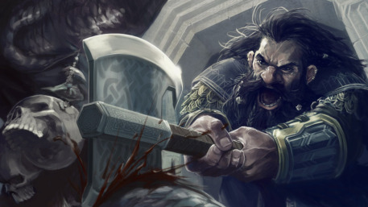

“Look, Dad! What's that dark cloud over there? It's not the storm, is it?” Looking over the backs of the four horses that pull your cart, your father squints, then says, “Riders. Lots of them and coming fast.” “Are they bandits, Paul?” asks your mother fearfully, clutching her shawl to her throat. “No, Martha. They can't be bandits. The Dwarven Guard cleaned up the last of them then years ago. I don't know who they are, but the way they're riding we'll soon find out. “Galen, grab that puppy of yours and get under cover in that pile of bedclothes.” “But I want to stay here. If there's trouble, I can help too.” “Do as your father says,” snaps your mother. “And don't come out till we say it's safe.” You know better than to argue with your mother, so you get off the narrow wooden seat and wriggle through the crowded cart. “Well, no one said I couldn't watch,” you whisper to Woofy, who licks your face in reply. Snuggling down into the pile of blankets, you quiet the puppy, who thinks you're trying to play. Then you arrange the blankets so that you can see. Soon, a faint rumble becomes the drumming thunder of horses' hoofs. “Hold your team!” demands a harsh voice. “Oh, Paul! It's the Guard!” cries your mother. “Thank heavens, we're safe.” Pulling the team to a complete stop, your father calls, “Ho! Guard! What is your business with us? We are anxious to camp before the storm breaks. Speak, and let us be on our way.” “Do you dare to speak so to the King's Guard?” snarls a menacing voice. “Teach the humans to be polite!” urges another of the uniformed dwarves. Your mother clings to your father's arm. Train begins to fall. All around you are the sounds of horses. Saddle leather creaks beneath the weight of the armored Dwarven Guard, and you feel the presence of unseen riders closing in. “Now, now, lads. Is this any way to speak to those we have vowed to protect?” asks a honeyed voice. “Come, let us not be hasty. Let's find out how the situation lies. After all, lads, we wouldn't want to make a mistake now, would we?” There is a long moment of silence. Then a few voices mutter, “Sneed's right.” “Well, then. There we all are. Nice and pleasant,” says Sneed. “Surely all a mistake. But these are lads with quick tempers, so please humor us by answering a few questions.” “I'm sure we've done no wrong,” says your mother. “What do you want to know?” “Just a few questions, “says Sneed. “Like where you've been and where you're going.” “Why, Captain, we're going to the prince's coronation, of course. And as to where we've been, we've been mapping. My husband is the royal mapmaker.” “Royal mapmaker, eh? Splendid occupation. So useful. And are you traveling alone?” Your father answers quickly, “Yes, Captain, quite alone. Just me and the missus.” “All by yourselves. Splendid, just splendid,” Sneed beams. “You see, lads, what comes of talking first? Now we know who these fine people are. Avoid mistakes, I always say. Now we know they are alone. Seize them!” Before your father can protest, heavy hands pull him and your mother from the cart. Your mother screams and your father curses, but rough laughter drowns out their cries. “You see, lads. It is as I told you. Who would suspect the king's own Dwarven Guard of treachery? No one, until it's far too late. Soon, all that is owed to us for long years of protecting humans will be ours. Now, tie these two up. We'll take them back to the caves. A mapmaker will be useful to our new kingdom. Soon we will launch our attack, With the price in our hands, the kingdom is ours! Drive the wagon int othe rocks and search it for gold and maps. Then burn it!”
you are hiding in the wagon
You have run away and the dwarves are gone. What now? major choice select
You went after the dwarves and were captured. You meet an old dwarf who wants your help.
You get captured by dowarves and taken to their hideout. You meed an old blind dowarf.
The old dwarf explains the dangerous mission. You must choose to go with the old dwarf on a dangerous mission or refuse
You accept the mission and now you must free the old dwarf's son, Bork from prison
He is not fooled what nnooowww? turn the page
You pick up a rock and attack....turn the page
You rescue Bork from jail and now you must decide what to do next The good dwarves want your help.
You find your parents in their cell. Your father wants you to help the dwarves but your mother wants you to stay
you're goind with the dwarves to warn the price
You ride to the city but gate is closed
You are in a drainage pipe. The tunnel branches three ways:
Ooops! It's an empty pit! Turn around and choose another way!
You have reached underneath the prince's throne. The evil dwarves are there and are throwing rocks at the prince. Galen sees a pipe and shouts into it “STOP THROWING ROCKS” and his voice is amplified throughout the throne room. Nobody knows where his voice is coming from.
You have decided to go to warn the prince you meet a fairy
You're shrunk and small. You're hiding and seeing two dwarves.
You meet Druid
You get shrunk and you meet a whitch
You continue with fairy and she want to stay in a spider den
You try to fight the dwarves but you are weak and lose. THE END
You refused to help and tied forever. END.
“I don't really think I can help you,” you tell the old dwarf.
At your words, his shoulders sag, and he seems to age before your very eyes. “no, I suppose it was too much to hope for,” sighs the dwarf. “Well, come with me. I will show you where your parents are.”
You follow the bent form to a cell in a nearby tunnel. The door is heavily barred, but the dwarf helps you, and soon the door creaks open.
Your parents hurry out. “Oh, Galen,” cries your mother, flinging her arms around you. “I thought you were dead. I thought we'd never see you again.”
“Now, Martha,” says your father gruffly, “don't smother the child.” Yet when your mother loosens her hold, your father squeezes your arm hard and there are tears in his eyes.
“No time for reunions,” grumbles the dwarf. “Time for that later...if you live.” You follow him closely as he shuffles through the corridors. Soon you reach an unguarded exit and escape into the night. You and your parents hide in the hills.
In the morning you watch the mounted dwarven army ride out. As evening's shadows lengthen on the mountains, the army returns, victorious. Over the years, you and your parents live under the grim rule of the evil monarch Sneed the Supreme. You often wonder what would have happened if you had helped the dwarf.
THE END.
You go after Sneed and because you're with badass dwarves you win yay!
You decide to stay in the cell with your parents and Sneed wins. THE END YOU LOSE
The city is taken but you manage to get the keys to the human prince's cell. You and the dwarves plan to get him out while raising an army of Bork's followers. THE END YOU WIN
Oh no! Pushed far away by the water! Can't go back in time! THE END YOU LOSE
You explain the situation. You and the dwarves talk it out. THE END YOU WIN
The dwarves ignore you and keep throwing rocks forever. THE END YOU LOSE
You attack the dwarves. You're too small. They squished you. THE END YOU LOSE
Druid turns you into a tree. THE END YOU LOSE
You run away and nobody belives you. THE END YOU LOSE
The witch eats you. THE END YOU LOSE
The fairy thanks you for trusting her. She helps you solve the problem. THE END YOU WIN
You catch a cold and crippled. THE END YOU LOSE
“No! Why should I trust you?” you exclaim. “You're a dwarf! This is probably a trick to get me killed. Go away!”
The old dwarf tries hard to convince you that he is an enemy of the evil Sneed, but you are too scared and tired to even listen. The old dwarf finally accepts the fact he has lost. Sagging with defeat, he sinks to the floor and, wrapping his arms around his knees, mumbles softly to himself.
Early the next morning you are awakened by the sound of thousands of dwarves marching off to battle. The old dwarf stand forlornly at the mouth of the empty cavern, listening to them go. A thread of doubt creeps into your mind, and you wonder if maybe, just maybe, you made the wrong decision.
THE END.
Cautiously you edge into the left-hand tunnel. The sound of rushing water grows louder. You are trying to move with care when suddenly your hands slip on a patch of slick moss. You fee yourself beginning to slide. All at once, the pipe ends and you drop through cold, dark space. Splash! You plunge deep into switftly flowing icy water that seizes you in its powerful current and whirls you away.
You have fallen into the great underground river that flows beneath the city.
you are pushed along by the fierce current and deposited, bruised and battered, on the banks of he river as it surfaces miles beyond the walls of the city.
You crawl up into the muddy bank. You lie there panting and trying to think. You could walk back to the city and maybe still help. You could also try to walk back to the caves and free your parents while most of the dwarves are gone. But either way, you realize, you are probably too late to save the prince.
THE END.
“Help! Help! Get me out of here. I’m down in the storm drain,” you cry.
After a moment, an ugly dwarf face squints down at you.
“It’s just some dumb kid, and a dog. Got themselves stuck in the drain,” says the dwarf., and soon the battle rages on again. You try to get someone to help, but no one listens. After a long time, all is silent.
You hear steps in the silence, then a bearded face peers through the grade. It’s Sneed!
“Ah, there you are. I must admit, it’s grand seeing you behind bars. I want you to know I’m going to do my best to keep things that way, now that I’m king.”
THE END.
As much as you want to, you cannot leave your mother in tears.
“Well, maybe it will be all right. Maybe the boulder benders will be able to warn the prince in time,” you say with a sigh.
“It’s not our fight, Galen. Don’t get involved,” says your mother. “Maybe you’re right,” you say and grasping your mother’s hand, you lead her out into the dark corridor After long hours of bumbling about in the dark, you find yourself outside, standing on top of the iron-red cliffs.
Below you, the dwarves army returns victorious.
Years later, as apprentice mapmaker to Sneed the Supreme, you wonder for the millionth time if you made a mistake in not going with Bork and Hume. If so, perhaps you will get a chance to correct that mistake. You have been contacted by Bork the Second, and you have agreed to help overthrow the evil Sneed. This time you will succeed.
You tried to fight the dwarves but you failed.
Pulling the horses into the trees at the edge of the road, you hide and wait until thundering hoofs and booming war drums announce Sneed’s arrival. “Open the gates!” roars Sneed.
“Go away! It’s not the time!” yells the guard.
“Open the gate or it will be past time for your head to rest on your neck,” snarls Sneed.
There is a moment’s silence, and then the guard says in a tiny voice, “Oh, maybe it is time after all. I think I see the sun coming up now.” The large wooden gates creak open, and Sneed and his men thunder through into the sleeping city.
As soon as the last Dwarf passes through the gates, the three of you mount your horses and follow them. The gate guard glowers own at you and mutters angrily to himself.
As you creep through the empty city streets, you hear the army roar, “Sneed! Sneed! Sneed! Long live Sneed the Supreme!”
Suddenly there is a clatter of hoofs and three horses dash by you. Ties to the saddle of one of the horses ia boy no older than yourself. A small crown rests crookedly on his head and tears streak his cheeks. For one short moment, the boy looks into your eyes—his look filled with despair—and then he is gone.
Just then, a small bent figure walks by the alley where you are hiding. He rubs his thin hands together and chuckles to himself, “At last, the king is dead, his son captured, soon to be in a dwarves cell, and those meddlesome Boulderbenders out of the way. Now all I have to do is let Sneed rule for a little while. When the time is right, I’ll slip a poison mushroom into the stew. Then it’s King Snively! No more ‘Yes, sir. No, sir’ ever again.”
“Not if I can help it,” you say, leaping out of the alley. Before Snively can say another word, you bang him on top of the head with a large rock and he falls to the ground with a thud. You drag him into the alley, search his pockets, and discover a large ring of keys.
“Bork, do you recognize these keys?”
“Of course. They’re the keys to the dungeon cells,” answers Bork.
“I thought he’d have them,” you say. “Help me tie him up. I think we should ride back to the caves, rescue the prince and my parents from the prisons, and throw Snively into the deepest dungeon.”
“It will also give me a chance to talk to my warriors. Once they know I am free, they will revolt. By morning Iron Mountain will be ours and your parents and the prince will be free and safe.”
Happily, you turn and ride toward the caves in the mountains.
THE END.
You wriggle out from beneath the blankets and pick up the first heavy thing you find—a shovel. Leaping from the seat of the wagon, you attack the nearest dwarf. Unfortunately, the shovel does little but annoy it.
He picks you up, laughs loudly, and thumps you on the top of the head with a heavy fist. Your mother screams, and everything goes black. Maybe you will recover and be able to help your parents escape later, but for now, it's ...
THE END.
An ear-piercing clang of metal on metal wakes you from his stupor. An empty whiskey bottle falls off the table with a thud as you startle awake. You can hear the roar and screams of a battle outside, and know it is time to take action. Things have not been so good lately, the past ten years or so, but that's no excuse. It's time to be a hero.
Staggering to your feet, you pulls both suspenders up, securing your trousers. One of the buttons securing the strap on the right shoulder pops off, sending the that suspender dangling down by your leg. But there is no time for that now! There's no time for anything except saving the town you love.
...Okay, perhaps not loves. Perhaps love is a strong word, but...
No! There's no time for this. You charge out the front door where you find...nothing. The battle has already moved on and left him behind. Maybe it's for the best, you think. You aren't really cut out for being a hero, or you probably would have already been one. Besides, you're a little past your prime, don't have any weapons, no training, you're by yourself...
But the heroism you felt a moment ago surges back as a fire rises up in the distance. Off you stumble, toward the action!
To be fair, someone in town should have to put up a sign saying the stones on the bridge are wet. The suspender you lost earlier now wraps around your leg, tripping you, and over the side you go, slowly drifting down river with the current. You watch as city drifts by, with no obvious way to get out. Eventually, you drift out of the city entirely, and by then you're growing used to the river. The temperature isn't bad, after all. As the city drifts away, you think about how this might be for the best anyway.
Maybe you can find somewhere to finish your nap.
THE END.
As an ancient wizard, great and powerful, you are often asked why you allow wars to continue. As someone of great strength, isn't it your obligation to offer protection to the helpless, to prevent famine and pestilence, to feed the starving and warm the cold?
But no one ever asks how your knees feel, or wonder how long it takes to walk down that mountain path from your magical fortress. Your poor, enchanted pack mule, Eldemere, is almost five hundred years old, for goodness's sake.
But no matter. You've heard word of the terrible goings-on in the lands below your magical fortress. Perhaps it's been too long since you visited civilization.
You make your way out of Mount Awful's foothills into the flatlands, where you can already hear the clashing of small swords in petty squabbles. The sun is high above, near it's zenith. You begin walking, and by the time you reach the town of Bilderberry, you realize you haven't eaten since breakfast. Making your way into the town, you stop by the Inn, seeking a small snack. Vegetable stew, perhaps.
"Greetings, young man. I have an old ass in need of feeding. And my mule outside is hungry, too," you say with a chuckle. The Innkeeper stares at you blankly. "Quite famished," you offer with a smile.
"I beg your patience, good sir. We are in the beginnings of a siege, and our facilities are stretched beyond their normal capacities."
A siege? You think back to the thoudsands of armored dwarves surrounding the city, as you approached Bilderberry. Perhaps this is the sort of thing people always complain about, you think, as you sigh.
Walking back outside, you leave Eldemere with the stable boy, and make your way back out the city gate to the forces preparing to attack.
"Excuse me," you say, tapping a dwarf on his armored pauldron. "I'd like to speak to your leader, please." You're met with a sneer you very much do not appreciate, and insist again that you speak to whoever calls themself captain of this regiment.
"I am these good dwarves leader. I am called Sneed, and we are here to-"
"Very good. Do you intend to put this town under siege, and then attack them?"
"We do," Sneed answers with narrowing eyes. "Perhaps you should make haste away from the castle, good si-"
Silece falls over the camp as Sneed disappears from view. Looking down, you look at a frog witting amongst Sneed's previously-occupied plate armor. A dozen men pick up swords, and step toward you. They too disappear, as a quiet chorus of ribbits fill the camp. A dozen frogs begin hopping around, free of their armor.
"Is that all?" you ask pleasantly, looking around at the pale-faced dwarves, glancing from you to the frogs hopping to and fro, then to you again. "I'll take that as a yes."
There is no movement from the camp until you say, "Perhaps it's time everyone heads home?" and are met with an enthusiastic rush from thousands of dwarves all taking what they can carry, and running away on foot.
You walk back into Bilderberry, petting Eldemere the Mule as you pass her by, walking into the Inn. "Young man, I would like some vegetable stew. Quite famished, you see."
THE END.